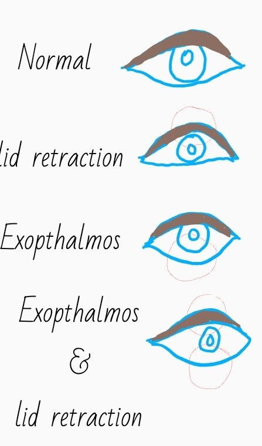

Goiter
Theory
Goiter is diffuse swelling of the thyroid gland.
Discrete swelling in otherwise normal gland - solitary swelling / isolated swelling.
Discrete swelling in abnormal thyroid – dominant
Classification
1.
Simple goiter (Euthyroid)
i. Diffuse hyperplastic. Causes – physiological in puberty, pregnancy (physiological goiter spontaneously resolves when demand is over). Pathological in dietary iodine deficiency, dyshormonogenesis, goitrogens –(cabbage, excessive iodine intake, heavy water, lithium)
ii. Multinodular goiter (MNG). Colloid, cellular, cystic, hemorrhagic, calcific nodules.
2. Toxic goiter (Hyperthyroid)
i. Diffuse toxic goiter – AKA Graves’ disease
ii. Toxic multinodular goiter
iii. Toxic adenoma
3. Neoplastic goiter
i. Benign
ii. Malignant
4. Inflammatory
i. Immune- Hashimoto
ii. Granulomatous- De Quervin
iii. Fibrosing- Riedel’sS
iv. Infective- acute and chronic bacterial, viral, tuberculous
v. Other- amyloidosis
Simple goiter
Simple goiter is common in females à estrogen receptors in thyroid.
Natural history – Long standing simple goiter à some areas with high activity à highly active areas become hyperplastic à hemorrhages into hyperplastic areas à necrosis à multinodular goiter. Long standing diffuse goiter à multinodular goiter
Diagnosis- Euthyroid, palpable thyroid, slow enlargement, smooth, firm not hard, painless, moves with swallowing. (painful, sudden appearance, rapid enlargement- ? carcinoma)
Investigations- TSH, T3, T4, (to establish thyroid status). Chest X-ray (look for retrosternal enlargement, tracheal compression and deviation). Thyroid antibodies (exclude autoimmune thyroiditis)
Complications- tracheal deviation and compression, retrosternal expansion, secondary hyperthyroidism, carcinoma
Prevention - Iodized salt to prevent endemic goiter.
Treatment-
Simple diffuse goiter - Thyroxine 150-200 micrograms daily for few months and observe for regression.
Multinodular goiter - is irreversible. Asymptomatic MNG – not an indication for surgery. indications for surgery in MNG – cosmetic, pressure symptoms, retrosternal extension tracheal compression, suspicion of malignancy, Secondary thyrotoxicosis – Plummer’s disease.
Discrete swellings in
thyroid gland
Isolated nodule / solitary nodule – one discrete swelling in normal thyroid gland.
Dominant nodule – one prominent one among many nodules
Investigations- TSH, T3, T4 if hyperthyroid à named toxic. Clinical diagnosis is toxic adenoma if a solitary nodule. Clinical diagnosis is toxic MNG if a dominant nodule.
USS – one of the first line investigations. Look the gland for subclinical nodularity, cysts, features of malignancy (eg: microcalcifications, increased vascularity, lymph node involvement)
Dominant nodule of toxic MNG is most likely to be cystic lesion. No need to do FNAC on the dominant nodule of toxic MNG. FNAC may be done for a suspicious nodule found in USS.
Autoantibody titer – to exclude chronic lymphocytic thyroiditis
Isotope scan – hot nodules – overactive compared to rest of the gland, warm nodule – activity equal to rest of the gland, cold nodule – underactive compared to rest of the gland. Isotope scan is not routinely done now. Only indicated in toxic MNG now.
FNAC- diagnose colloid nodule, thyroiditis, papillary carcinoma, medullary carcinoma, anaplastic carcinoma, lymphoma, presence of follicular features
FNAC results
|
Thy 1 |
Non-diagnostic |
|
Thy 1c |
Non-diagnostic cystic aspirate |
|
Thy 2 |
Non-neoplastic |
|
Thy 3 |
Follicular |
|
Thy 4 |
Suspicious of malignancy |
|
Thy 5 |
Malignant |
Papillary carcinoma, anaplastic carcinoma, and lymphoma can be diagnosed form FNAC. If the FNAC report is Thy 3, diagnosis can be follicular adenoma or follicular carcinoma à do histology to see if capsule is breeched or not. If breached à follicular carcinoma. If capsule is intact à follicular adenoma.
Chest X ray is needed to look for tracheal deviation and compression, retrosternal extension. CT, MRI, PET scans are not routinely done. Useful if large retrosternal extension, previous surgery and recurrence of malignancy.
Laryngoscopy done by ENT surgeon before surgery to assess vocal cord palsy.
Indications for surgery
· Confirmed neoplasia – FNAC reports Thy 5, Cervical lymph metastasis
· Suspicious of neoplasia – FNAC reports Thy3, Thy 4, Male, hard fixed thyroid, rapid enlargement, recurrent laryngeal nerve palsy, old age
· Toxic adenoma
· Pressure symptoms
· Cosmetic reasons
· Patient’s request
Types of surgeries
· Total thyroidectomy = 2 × total lobectomy + isthmusectomy
· Subtotal thyroidectomy = 2 subtotal lobectomy + isthmusectomy
· Near-total thyroidectomy = total lobectomy + isthmusectomy + subtotal lobectomy (Dunhill procedure)
· Lobectomy = total lobectomy + isthmusectomy
Total thyroidectomy is most frequently done because of the advantages – Immediate return to euthyroid state, no risk of recurrence, repeat surgery (completion thyroidectomy) is difficult, and any and all suspicious nodules are removed at once.
Retrosternal goiter
Often symptomless. May be severely symptomatic – dyspnea, dysphagia, engorged veins, vocal cord paralysis.
If symptomatic do not give antithyroid or radioiodine à risk of enlargement.
Small retrosternal goiters can be delivered whole form the neck. Large retrosternal goiters require midline sternotomy. Piecemeal removal from neck risks leaving fragments behind.
Examination
of a case
First make sure it is a thyroid swelling. – Pathognomonic feature à moves with swallowing.
Look from side and ask to swallow.
Lump moves up à thyroid
Inspect à enlargement, symmetry, visible dominant nodule, scars of previous surgery, engorged neck veins, stridor, skin changes
Palpate à from front- tracheal deviation? palpate visible nodules. Tender? Proper palpation from behind- Both hands behind the neck, neck slightly flexed to relax anterior neck muscles. One hand stabilized and other hand palpates. Make sure the lump is in the thyroid by asking the patient to swallow when a lump if found. Tender? Lower border palpable? Lymphadenopathy? Palpable thrill?
Percussà rarely useful in retrosternal extension.
Auscultateà for bruit - ask the patient to turn the head to right and hold breath. Auscultate on the upper lateral pole of the left lobe. Vice versa for right lobe.
Clinically determine the thyroid status
Signs of hyperthyroidism-
Fine tremor, sweaty palms, restless, exophthalmos -observe from above, lid lag, lid retraction, ophthalmoplegia, chemosis, tachycardia, irregular pulse (elderly patients with secondary AF), collapsing pulse, heaving apex, ejection systolic murmur
Symptoms of hyperthyroidism-
Increased appetite, loss of weight, excessive sweating, heat intolerance, palpitations, dyspnea, diarrhea, oligomenorrhoea, insomnia, anxiety.
Signs of hypothyroidism-
Dry cold skin, facial puffiness, loss of outer part of eye brow, pretibial myxedema, bradycardia, slow movements, slow relaxing ankle jerk.
Symptoms of hypothyroidism-
Lethargy, somnolence, constipation, arthralgia, loss of appetite, weight gain, cold intolerance, numbness of hands, hoarseness of voice, deafness.

Summery-
Describe the lump.
Obstructive features including retrosternal extension?
Malignant features?
Clinically assessed thyroid status